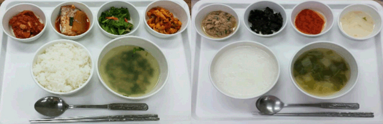

감천참편한 요양병원 영양실에서는 영양권장량에 기초하여 입원환자에게 양질의 균형잡힌 식단을 제공함으로써 점진적인 체중감소를 최소화함과 동시에 기능적 독립성을 가능한 한 유지시킬 수 있도록 하고자 함을 목표로 하고 있는 부서입니다.
이에 감천참편한 요양병원 영양실에서는 항상 신선한 재료를 사용하여 환자분의 건강을 위해 정성을 다하여 식사를 준비하고 있습니다.
7대 영양소가 골고루 들어 있는 영양이 풍부하고 소화가 잘 되는 음식을 제공하기 위해 늘 노력하고 있습니다.

· 당뇨식 : 무조건 적게 먹는 제한식이 아닌 ‘조절식’ 으로 정상적인 활동을 하시는데 필요한 개개인의 열량범위 내에서 모든 영양소가 골고루 포함된 식단
· 경관급식 : 혼수상태, 의식불명, 마비, 구강 이나 인두의 심한 부상으로 씹고 삼키는 것이 어려운 경우 feeding tube 를 삽입하여 영양소 성분을 제공하는 식단
· 미음식 : 구강이나 치아등 기타 여러 가지 문제로 저작활동이 어려운 경우 쉽게 섭취가 가능한 형태로 제공하는 식단
· 다짐식 : 저작활동이 불편하신 경우 소화를 돕기 위해 선택 가능한 식단